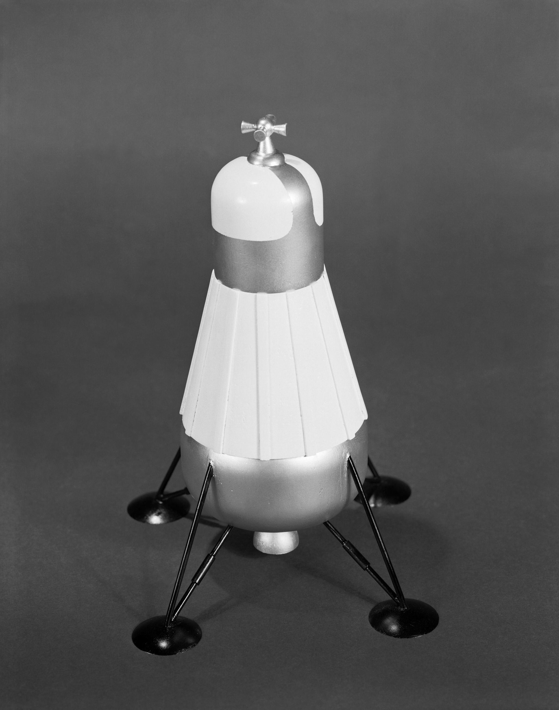

At Langley Research Center, several committees were formed during 1959 and 1960 to look at the role of rendezvous in space station operations.* John Houbolt, Assistant Chief of the Dynamic Loads Division, who headed one of these groups, fought against being restricted to studies of earth-orbiting vehicles only. The mission the Houbolt team wanted to investigate was a landing on the moon.17
A more formal Lunar Missions Steering Group was established at Langley during 1960, largely through the efforts of Clinton E. Brown, Chief of the Theoretical Mechanics Division. The Lunar Trajectory Group within Brown's division made intensive analyses of the mechanics in a moon trip. Papers on the subject were presented to the steering group and then widely disseminated throughout Langley.18
One of these monographs, by William Michael, described the advantage of parking the earth-return propulsion portion of the spacecraft in orbit around the moon during a landing mission. Michael explained that leaving this unit, which was not needed during the landing, in orbit would save a significant weight over that needed for the direct flight method; the lander, being smaller, would need less fuel for landing and takeoff. But he cautioned that this economy would have to be measured against the "complications involved in requiring a rendezvous with the components left in the parking orbit."19
Brown's steering group looked closely at total weights and launch vehicle sizes for lunar missions, comparing various modes. Arthur Vogeley, in particular, concentrated on safety, reliability, and potential development programs; Max Kurbjun studied terminal guidance problems; and John Bird worked on designs for a lander. They concluded that lunar rendezvous was the most efficient mode they had studied.20
Work at Langley then slackened somewhat, since NASA's manned lunar landing plans seemed to be getting nowhere. On 14 December 1960, however, personnel from Langley went to Washington to brief Associate Administrator Robert Seamans on the possible role of rendezvous in the national space program. When he first joined NASA, three months earlier, Seamans had toured the field centers. At Langley, Houbolt had given him a 20-minute talk on lunar-orbit rendezvous, using rough sketches to illustrate his theory. Seamans had been sufficiently impressed by this brief discussion to ask Houbolt and his colleagues to come to Washington in December and make a more formal presentation. At this meeting, Houbolt spoke on the value of rendezvous to space flight; Brown presented an analysis of the weight advantages of lunar-orbit rendezvous over direct flight; Bird talked about assembling components in orbit; and Kurbjun gave the results of some simulations of rendezvous, indicating that the maneuver would not be very difficult.
A ferry that would leave a command ship in orbit around the moon, visit the lunar surface, and then return to the command ship for the voyage back to the earth could be smaller than the lander required for direct landing on the moon or other suggested modes. The reduced size was seen by many engineers as the great advantage of lunar orbit rendezvous over the other techniques.
Houbolt closed the session, remarking that rendezvous was an undervalued technique so far, but NASA should seriously consider its worth to the lunar landing program. Several members of Seamans' staff viewed the weight-saving claims with skepticism,21 but Seamans was understanding. He had just completed a study for the Radio Corporation of America on the interception of satellites in earth orbit, and it occurred to him that some of the concepts he had studied might well be adapted to lunar operations.22
Back in Virginia, the Langley researchers had been trying to get their Space Task Group neighbors interested in rendezvous for Apollo. On 10 January 1961, Houbolt and Brown briefed Kurt Strass, Owen Maynard, and Robert L. O'Neal. O'Neal, who reported to Gilruth on the meeting, was less than enthusiastic about the lunar-orbit rendezvous scheme. He conceded that it might reduce the weight 20 percent, but "any other than a perfect rendezvous would detract from the system weight saving."23
From December 1960 to the summer of 1961, Langley continued its analyses of lunar-orbit rendezvous as it applied to a manned lunar landing. Bird and Stone, among others, studied hardware concepts and procedures, including designs and weights for a lunar lander, landing gear, descent and ascent trajectories between the landing site and lunar orbit, and final rendezvous and docking maneuvers. Their findings were distributed in technical reports throughout NASA and in papers presented to professional organizations and space flight societies.24

An early lunar excursion model was designed on a Friday afternoon in early 1961 by John D. Bird and Ralph W. Stone, Jr., of Langley Research Center for project MALLIR.
In the spring of 1961, these Langley engineers compiled a paper proposing a three-phase plan for developing rendezvous capabilities that would ultimately lead to manned lunar landings: (1) MORAD (Manned Orbital Rendezvous and Docking), using a Mercury capsule to prove the feasibility of manned rendezvous and to establish confidence in the techniques; (2) ARP (Apollo Rendezvous Phase), using Atlas, Agena, and Saturn vehicles to develop a variety of rendezvous capabilities in earth orbit; and (3) MALLIR** (Manned Lunar Landing Involving Rendezvous), employing Saturn and Apollo components to place men on the moon. Houbolt urged that NASA implement this program through study contracts.25
* Most deeply engaged in Langley's rendezvous studies were John Bird, Max C. Kurbjun, Ralph W. Stone, Jr., John M. Eggleston, Roy F. Brissenden, William H. Michael, Jr., Manuel J. Queijo, John A. Dodgen, Arthur Vogeley, William D. Mace, W. Hewitt Phillips, Clinton E. Brown, and John C. Houbolt.
** MALLIR embodied lunar-orbit rendezvous and a separate landing craft. Because America had no launch vehicle large enough to send a craft to the moon with only one earth launch, it also required an earth-orbital rendezvous before the spacecraft departed on a lunar trajectory.
17. John C. Houbolt, interview, Princeton, N.J., 5 Dec. 1966; Houbolt, "Lunar Rendezvous," International Science and Technology 14 (February 1963): 62-70; John D. Bird, interview, Langley, 20 June 1966.
18. Bird interview; Bird, "A Short History of the Lunar-Orbit-Rendezvous Plan at the Langley Research Center," 6 Sept. 1963 (supplemented 5 Feb. 1965 and 17 Feb. 1966); Houbolt, "Lunar Rendezvous," p. 65.
19. William H. Michael, Jr., "Weight Advantages of Use of Parking Orbit for Lunar Soft Landing Mission," in Jack W. Crenshaw et al., "Studies Related to Lunar and Planetary Missions," Langley Research Center, 26 May 1960, pp. 1-2.
20. John M. Eggleston, interview, Houston, 7 Nov. 1966; Bird, "Short History," p. 2; Bird interview.
21. Bird, "Short History," p. 2; list of attendees at Briefing on Rendezvous for Robert C. Seamans, Jr., 14 Dec. 1960; Bird and Houbolt interviews.
22. Seamans, interview, Washington, 26 May 1966.
23. Robert L. O'Neal to Assoc. Dir., STG, "Discussion with Dr. Houbolt, LRC, concerning the possible incorporation of a lunar orbital rendezvous phase as a prelude to manned lunar landing," 30 Jan. 1961.
24. For a listing of some of the results of these studies, see "Reports and Technical Papers Which Contributed to the Two Volume Work 'Manned Lunar-Landing through Use of Lunar-Orbit-Rendezvous,' by Langley Research Center," Langley Research Center, n.d.; William D. Mace, interview, Langley, 20 June 1966. See also John C. Houbolt, "Problems and Potentialities of Space Rendezvous," paper presented at the International Symposium on Space Flight and Re-Entry Trajectories, Louveciennes, France, 19-21 June 1961, published in Theodore von Kármán et al., eds., Astronautica Acta 7 (Vienna, 1961): 406-29.
25. Langley Research Center, "Manned Lunar Landing Via Rendezvous," charts, n.d.; Bird, "Short History," p. 3; Houbolt interview; Houbolt, "Lunar Rendezvous," International Science and Technology, February 1963, pp. 62-70, 105.